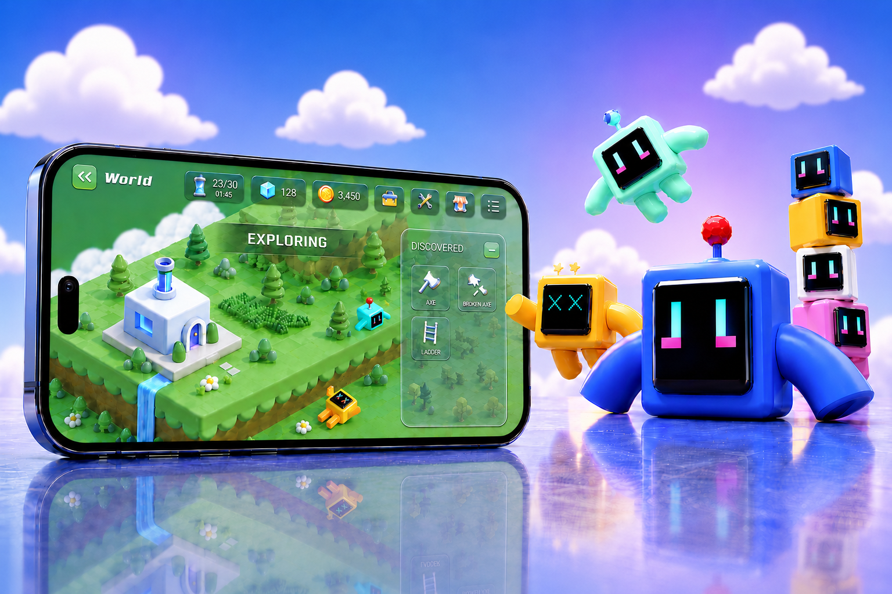
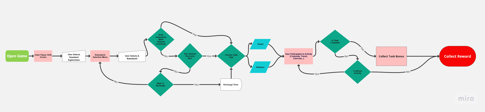
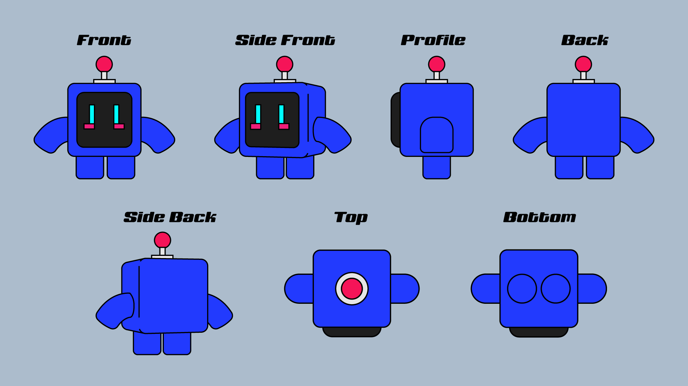
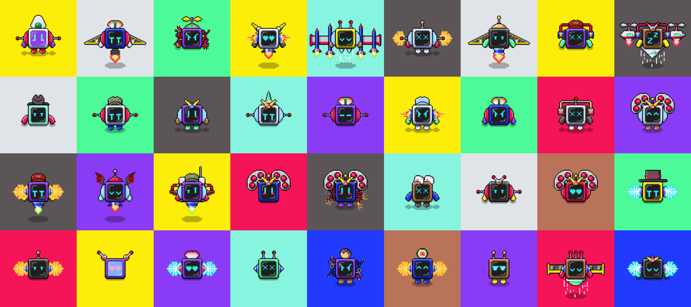

スマホUX・GameFi・キャラクターIP
ROBODACHI
Planet of Robots プロジェクト
歩くことで遊べるスマホRPGのアイデアです。歩くと、探索、アイテム集め、キャラクターの成長、売買ができます。

01. プロジェクト概要
現実で歩くとゲームが進むスマホRPGです。
Planet of Robotsは、現実で歩くとゲームが進むスマホRPGです。探索、アイテム集め、キャラクターの成長、売買ができます。
ROBODACHIは、このゲームのメインキャラクターです。プレイヤーが現実で歩くと、ROBODACHIがゲームの中を自動で探索します。
担当した役割
最初のアイデアから開発前のデザインまで、一人で担当しました。商品戦略、UX、ゲームのルール、スマホの操作、プロトタイプ、ゲーム内のお金、ビジュアル、キャラクター、2Dと3Dのアセットを作りました。
このプロジェクトの仕事
スマホゲームUX・ゲームシステム・GameFi・キャラクターIP
02. デザイン課題
簡単に遊べるゲームとWeb3の価値を一緒にする。
多くの歩くアプリは、「歩く、報酬をもらう、終わる」という流れです。そのため、長く使い続ける理由が少ないです。
多くのGameFiはトークンをもらうことが中心です。ゲームの楽しさやキャラクターへの気持ちが弱く、初心者には難しいこともあります。
歩くことを、長く楽しめるゲームにするにはどうすればよいか。
歩くと、探索、アイテム集め、強化、交流、装備、新しい場所につながるように考えました。

03. ターゲットユーザーと動機設計
初心者でも少しずつ分かるゲームにする。
人によってゲームをする理由は違います。楽しさ、成長、簡単な参加、アイテムを持つこと、売買など、いろいろな目的に合わせました。

一般のゲームユーザー
楽しさ、成長、チャレンジ、好きなキャラクター、分かりやすい報酬を求めます。
ブロックチェーンに興味があるユーザー
トークン、NFT、アイテムを持つこと、売買に興味があります。
04. プロダクトの解決策
歩くことで続くRPGの流れ。
現実で歩くと、ゲームの中で探索、アイテム集め、装備の発見、キャラクターの成長ができます。ゲームで成長したい気持ちが、また歩く理由になります。
歩く → 探索 → 資源収集 → ROBODACHIを強化 → 新しい行動を解放 → 再び歩く
コアアクションループ
移動 → 収集 → 加工 → 建設 → 強化 → 修理 → 取引 → 拡張

05. プロダクトシステム設計
移動、ゲーム、お金の3つの部分。
まず、ゲームの基本の流れを決めました。次に、探索、アイテム集め、加工、強化、土地、所有がどうつながるかを整理しました。


06. モバイルプロトタイプの進化
最初の操作チェックから、完成に近いデザインへ。
最初は機能を確認する簡単な画面でした。その後、機能とビジュアルを増やし、完成に近い形にしました。
バージョン1 - 操作の確認
最初のバージョンでは、ROBODACHIを選ぶ、探索する、報酬をもらう、マップに戻る流れを作りました。まず、操作が分かりやすいか確認しました。
バージョン2 - 機能を追加
2つ目では、キャラクター管理、パーツ変更、メニュー、装備、販売、交流の機能を追加しました。
07. キャラクターシステムとIP設計
5種類のROBODACHIを増やせるシステム。
ROBODACHIには5つのタイプがあります。それぞれ性格、動き、ゲームでの役割が違います。あとから新しいキャラクターも追加できます。

- フライングユニット - 空中偵察、高い機動力、高いエネルギー消費
- ヒューマノイドユニット - 柔軟性とバランスの取れた行動
- ランナーユニット - スピード、地上偵察、探索
- リフターユニット - 力、防御、建設
- キューブユニット - 知性、処理、戦略
08. 属性とビルドロジック
見た目とゲームでの役割をつなげる。
いろいろなタイプのROBODACHIを考えました。速さ、体力、強さ、アイテム集め、探索など、得意なことが違います。

09. 装備とエクイップメントの成長
見た目だけでなく、能力も変わる装備。
装備を変えると、見た目と能力が変わります。探索、バトル、アイテム集め、町の管理がしやすくなります。


装備は、見た目の変更、能力アップ、収集、強化、修理、売買に使えます。
10. 世界とバイオームの拡張
歩くことで探索できるアイソメトリックの世界。
長く遊べるように、いろいろなエリアを考えました。エリアごとに新しい材料、景色、チャレンジがあります。
現実で歩くと、ROBODACHIが新しいエリアを探索します。材料や新しい道を見つけます。


11. 3Dモデル開発とコンセプト動画
ビジュアルでゲームの世界を説明する。
未来的ですが、親しみやすいデザインにしました。パーツを変えたり、集めたりできます。将来はNFT、SNS、3D動画、おもちゃ、イベントなどにも広げられます。
ROBODACHIの3Dモデルとストーリーボードを作りました。外部の動画チームと一緒に、ゲームの世界と使い方を見せる動画も作りました。

12. プロダクトWebサイト
ゲームの世界、キャラクター、公開までの流れを伝える。
Webサイトでは、ROBODACHIの世界、タイプ、能力、プロトタイプを紹介しました。キャンペーンやマーケットのページも考えました。
13. 最初の体験：シンプルなHTMLゲーム
完成版の前に、すぐ遊べるものを作る。
完成版のゲームには長い時間が必要です。そのため、NFTを持つ人がすぐ遊べる小さなゲームを作りました。
完成版の前に、シンプルなHTMLゲームを作りました。これは最終版ではありませんが、NFTを持つ人やコミュニティがROBODACHIを早く体験できました。

完成版ができる前も、コミュニティが遊べるようにするためのゲームです。
14. IPエコシステムの拡張
ROBODACHIをゲーム以外にも広げる。
ROBODACHIをゲームだけでなく、コラボ、おもちゃ、服、オンラインイベント、デジタルコミックにも広げる計画を作りました。
磁石でパーツを付けるミステリーボックスのおもちゃも考えました。頭、腕、体、足のパーツを交換できます。ゲームのカスタマイズと本物のおもちゃをつなげました。


{kind=link}
{kind=link}
{kind=link}
{kind=link}
{kind=link}
{kind=link}
{kind=link}
{kind=link}
{kind=link}
{kind=link}
{kind=link}
{kind=link}
{kind=link}
{kind=link}
{kind=link}
{kind=link}
{kind=link}
{kind=link}
{kind=link}